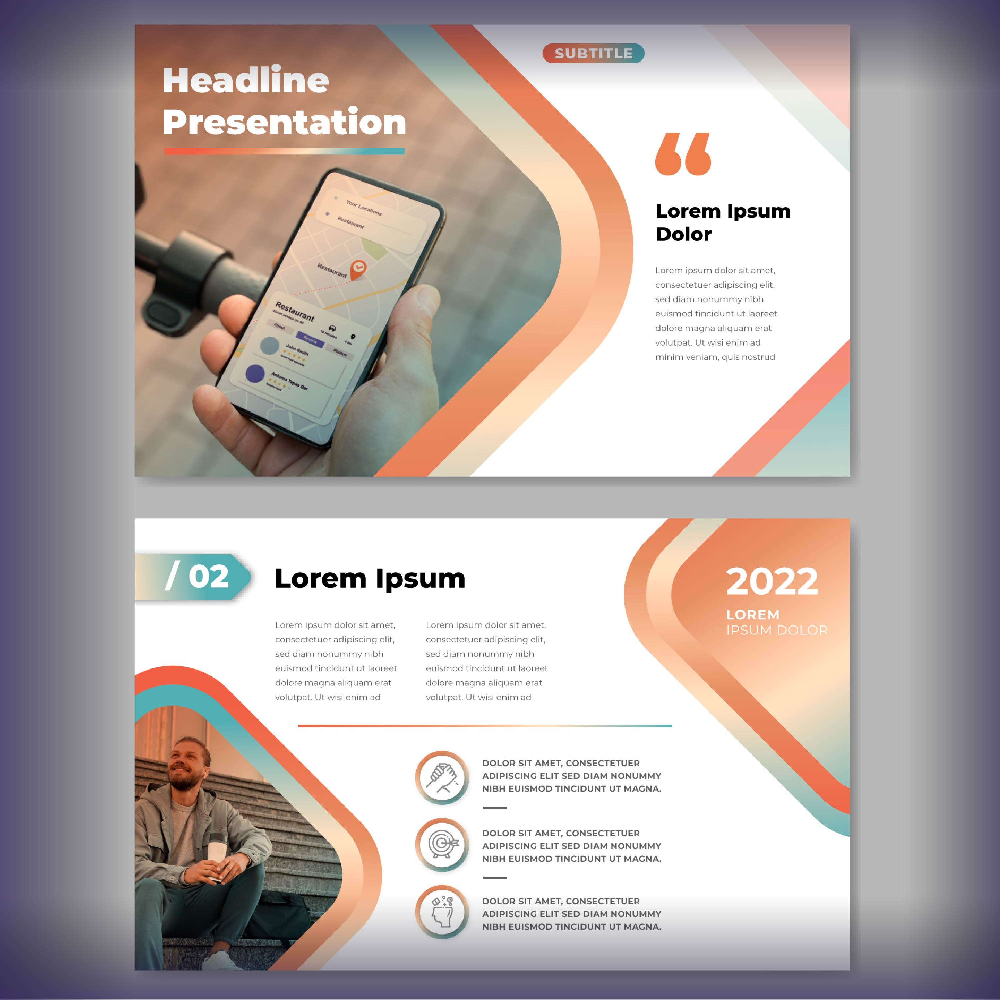

Home / La Multimedia
La palabra multi del prefijo que proviene del latín multus: "muchos", "varios" o "abundante" y la palabra media del plural de la palabra latina medium (medio/soporte), significa etimológicamente “múltiples medios”, que incorporada en el ámbito de las tecnologías de la información y comunicación (TIC), hace referencia a “múltiples intermediarios entre la fuente y el destino de la información, es decir, que se utilizan diversos medios para almacenar, transmitir, mostrar o percibir la información”.
El término multimedia se utiliza para referirse a cualquier objeto o sistema que relaciona múltiples medios de expresión físicos o digitales para presentar o comunicar información. De allí la expresión multimedios. Los medios pueden ser variados, desde texto e imágenes, hasta animación, sonido, video, etc.
El contenido multimedia es aquel que utiliza de manera conjunta y simultánea diferentes mecanismos de comunicación, como pueden ser el audio, el video, el texto escrito y la imagen.

Se trata de un tipo de contenido multimedia diseñado para presentarse de forma secuencial, es decir, que tiene un principio y un final definidos. Generalmente, se utiliza con fines de exhibición, sin mucha interacción ni distracción por parte del público y su objetivo principal es la de entretener, transmitir y familiarizar a las personas con un tema determinado SIN ningún tipo de distracción. Como ejemplo tenemos: Una presentación de PowerPoint, una película o un video de YouTube.
Se trata de un tipo de contenido multimedia no secuencial en el que la participación del usuario es crucial. De esta manera, en este tipo de medios, la persona necesita interactuar con un programa o una interfaz informática lo que le permite controlar la experiencia a su voluntad. Como ejemplos tenemos: Un sitio web, una aplicación o un videojuego.